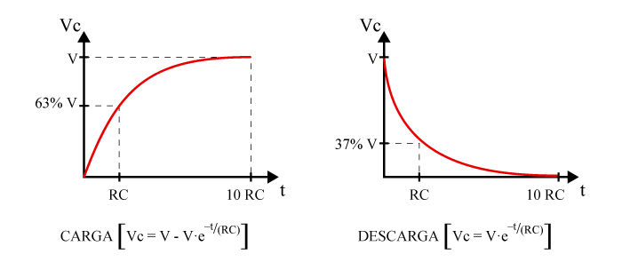
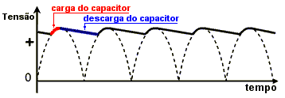

Capacitores nos
Circuitos Elétricos
Os capacitores desempenham papéis cruciais em uma ampla gama de circuitos elétricos, proporcionando funcionalidades essenciais que vão desde o armazenamento de energia até a filtragem de sinais e a estabilização de tensão. Este conjunto de tópicos explora diferentes aspectos do uso dos capacitores em circuitos elétricos, abordando desde a carga e descarga em capacitores individuais até aplicações específicas em circuitos de corrente contínua e corrente alternada.
Carga e Descarga
O processo de carga Q e descarga V(t) de capacitores é fundamental em circuitos eletrônicos, onde capacitores armazenam energia elétrica temporariamente. Durante a carga, um capacitor acumula carga Q à medida que a diferença de potencial V aumenta entre seus terminais, seguindo a equação:
Na descarga, a tensão V(t) em um capacitor em função do tempo t é dada por:
Onde:
- \( Q \) é a carga no capacitor (em coulombs, C),
- \( C \) é a capacitância (em farads, F),
- \( V \) é a tensão da fonte (em volts, V),
- \( R \) é a resistência do resistor no circuito (em ohms, Ω),
- \( t \) é o tempo (em segundos, s),
- \( V_{0} \) é a tensão inicial no capacitor.
Circuitos de Corrente Contínua
Capacitores são fundamentais em circuitos de corrente contínua (DC), onde são usados para suavizar a saída de tensão de fontes de alimentação, reduzindo variações e ondulações indesejadas. Em circuitos RC (resistor-capacitor), por exemplo, a constante de tempo \( \tau = RC \) determina a taxa de carga e descarga do capacitor, influenciando diretamente o comportamento do circuito em termos de resposta transitória e estabilização de tensão. Em regime permanente, os capacitores chegam a alcanção um estado equivalente ao de circuito aberto.
Circuitos de Corrente Alternada
Em circuitos de corrente alternada (AC), capacitores são empregados em configurações RLC (resistor-indutor-capacitor) para diversas funções, incluindo a ressonância em frequência, correção do fator de potência e filtragem de sinais. A reatância capacitiva \( X_{c} \) em um capacitor é dada por:
Onde:
- \( X_{c} \) é a reatância capacitiva (em ohms, Ω),
- \( f \) é a frequência da corrente alternada (em hertz, Hz),
- \( C \) é a capacitância (em farads, F).
Referências
- [1]: Boylestad, R. L., & Nashelsky, L. (2016). Electronic Devices and Circuit Theory. Boston: Pearson.